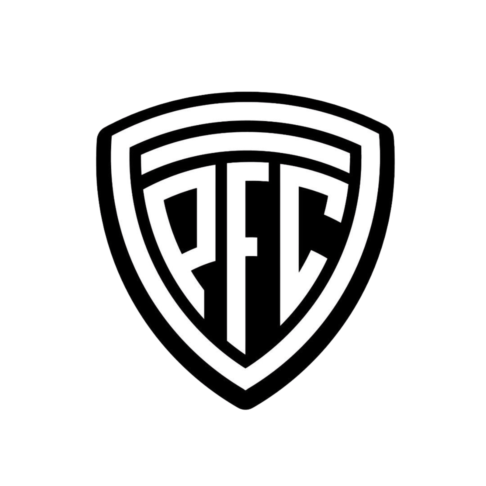

Pico Foot Ball Club, fundado el 1 de abril de 1919, es la institución deportiva más antigua de la ciudad de General Pico. Conocido tradicionalmente como "El Albinegro" por sus característicos colores blanco y negro, el club nació a la par del crecimiento de la ciudad y se consolidó rápidamente como un espacio pionero para el desarrollo deportivo y social de toda la región pampeana.
Aunque su nombre lleva la impronta del fútbol (donde compite históricamente en la Liga Pampeana haciendo de local en el Estadio Olímpico Emiliano Arce), el club alcanzó trascendencia nacional gracias al básquetbol. Su emblemático estadio, el Parque Ángel Larrea, fue escenario de las épocas doradas de la Liga Nacional de Básquet (LNB), protagonizando uno de los clásicos más vibrantes del país. Hoy en día, Pico FC compite en la Liga Argentina de Básquet y sigue siendo un semillero inagotable de deportistas en diversas disciplinas.